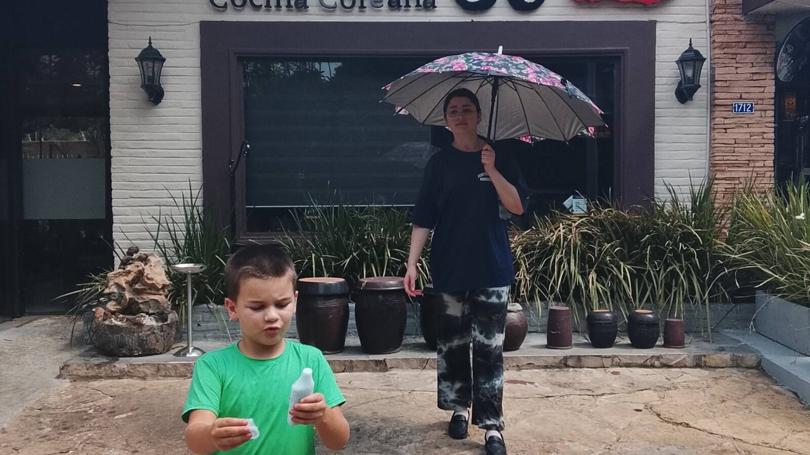

Autism, Intellectual Disability, and the Transition to Adulthood
Adulthood changes the systems around a disabled person. It does not make communication, safety, relationships, or daily support less important.

What changes when an autistic child with an intellectual disability becomes an adult?
The person does not suddenly become less autistic, less vulnerable, or less deserving of the relationships and support that made childhood work. What changes is the network around them. School entitlements end. Legal authority may shift. Pediatric providers may no longer be available. Transportation, daytime activity, income, health care, decision-making, and housing may each move into a different adult system.
That is why transition planning cannot be a graduation checklist. It is the deliberate work of carrying knowledge, support, choice, and belonging from one stage of life into the next.
A good transition does not demand that support disappear. It makes sure the right support survives adulthood.
Autism and intellectual disability shape different parts of the plan
Autism may affect communication, sensory regulation, flexibility, social understanding, and how a person experiences environments. Intellectual disability may affect learning, reasoning, problem-solving, and adaptive functioning. When they occur together, adult planning must account for both—without assuming that a diagnosis tells us everything about one person.
Someone may perform a familiar household task while being unable to manage money. They may navigate a known route but be unsafe in a novel place. They may communicate clear preferences without understanding a contract. Abilities are often uneven, contextual, and dependent on support.
Families therefore need a functional picture: what the person understands, communicates, chooses, enjoys, avoids, and does safely; which tasks require prompting or hands-on help; and what happens under stress, illness, or change.
Transition services are supposed to connect school with adult life
In the United States, IDEA defines transition services as a coordinated, results-oriented set of activities designed to help a student move from school to post-school life. The definition includes education, employment, adult services, independent living when appropriate, and community participation. Federal rules require measurable postsecondary goals and transition services in the IEP no later than the first IEP in effect when the student turns 16, or earlier when appropriate. Some states begin earlier.
Those rules are useful, but a compliant document is not the same as a workable adult life. The plan must be translated into introductions, applications, practice in real settings, equipment, records, funding, and people who have agreed to take responsibility.
Outside the United States, the agency names and legal rights differ. The planning questions remain: Who provides support after school? How is it funded? Who coordinates it? What will a normal week contain?
Walking ahead does not mean walking alone
The photograph for this article came from Monica’s 21st-birthday lunch at a Korean restaurant here in Paraguay. Sam is walking toward the camera, with an adult behind him.
That image fits the kind of adulthood I want for him. I want him to keep moving into more places, experiences, preferences, and skills. I also expect that someone who knows him will remain close enough to help.
Independence can be a valuable goal. But transition planning fails when “adult” is treated as a synonym for “alone.” For a person with profound support needs, success may mean reliable assistance, more ways to communicate, meaningful choices, familiar relationships, safe community access, and a home that will not disappear when a parent can no longer provide everything.
Build the adult week before school disappears
School organizes transportation, staffing, therapy, meals, activity, social contact, and predictable time. When school ends, families may discover that they were not replacing one service. They were replacing an entire weekday structure.
Write the future week in concrete blocks. Where will the person be Monday morning? Who arrives? How do they get there? What happens at lunch? Where can they rest? How will communication and personal care be supported? What fills evenings and weekends? A blank calendar is not freedom when a person depends on others to access the world.
This is also the time to consider adult health care, benefits, legal decision-making, emergency information, transportation, relationships, daily activity, and life skills that genuinely improve daily life.
What you can do this week
Write a one-page support snapshot
Record communication, personal care, supervision, sensory needs, health concerns, safety risks, preferences, and what helps after distress.
Map one ordinary weekday
List every support currently provided by school or family from waking through bedtime. Mark what will need a new provider or plan in adulthood.
Invite the adult system in early
Ask which adult-service, benefits, health, vocational, or community representatives can participate before school eligibility ends.
Name one skill worth practicing
Choose a useful, achievable step tied to the person’s actual future—not a generic milestone.
Long-term questions to consider
- Who will coordinate services when no school team does?
- How will the person communicate preferences, refusal, pain, and consent?
- Which decisions can they make, and what support or legal authority is needed for others?
- What will happen during caregiver illness, aging, or death?
- Where will the person live, and what makes that setting sustainable?
- Which relationships should continue across the transition?
Casa de SAM’s position: adulthood should expand life, not erase support
Casa de SAM is being designed for adults whose support needs remain substantial. We do not believe adulthood should require people to prove they can live alone before they receive dignity, choice, privacy, relationships, and a meaningful place in the community.
Preparation should increase capability where it can, preserve support where it must, and build a future sturdy enough to outlast a parent.
Sources and further reading
- U.S. Department of Education: IDEA definition of transition services
- U.S. Department of Education: IDEA transition requirements in the IEP
- U.S. Department of Education: Transition Guide to Postsecondary Education and Employment
- U.S. Department of Education: Coordinating Transition Services and Postsecondary Access
About Casa de SAM
Casa de SAM is a developing vision for a lifelong residential community in Paraguay for adults with autism and other developmental disabilities who need substantial daily support. The project is being designed around safety, flexible daily rhythms, meaningful choice, relationships, and belonging that does not have to be earned through productivity or independence.
Casa de SAM is not yet an operating nonprofit or residential provider. We are currently researching, documenting the vision, and looking for people who may eventually help build it responsibly.
This article provides general educational information and describes Casa de SAM’s developing philosophy. Laws, eligibility rules, and services vary by country and jurisdiction. This is not individualized medical, therapeutic, educational, legal, or program-placement advice.